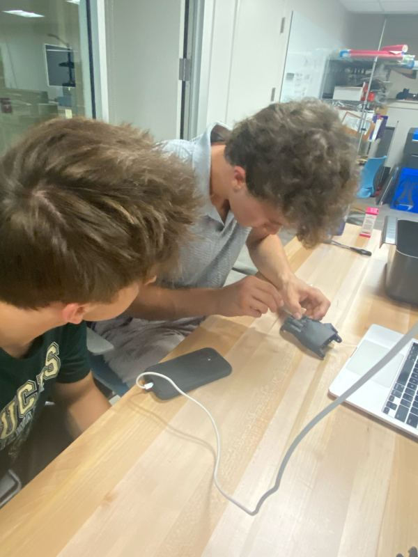
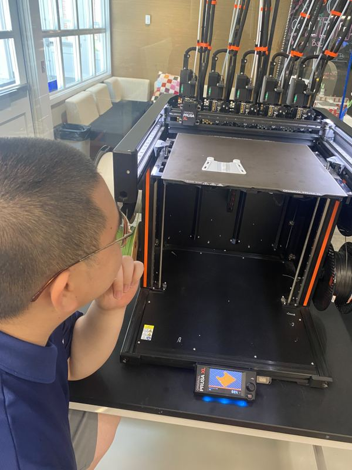
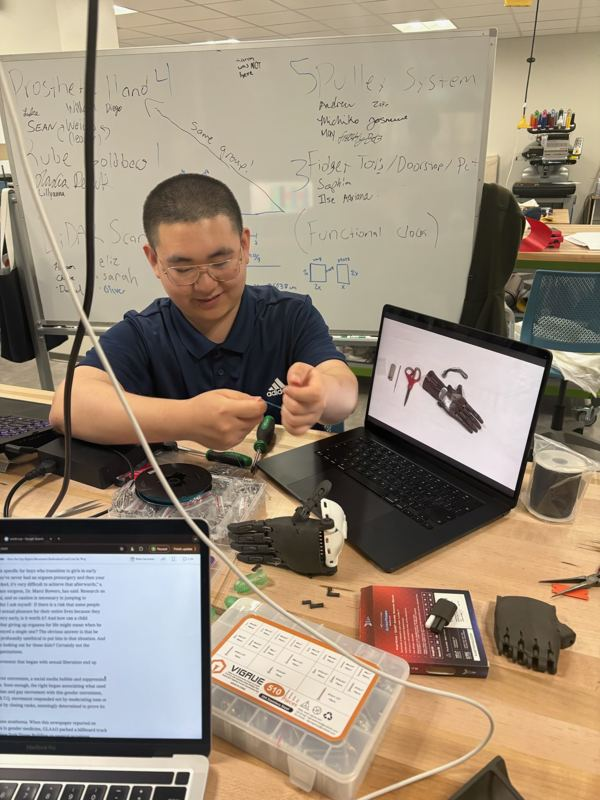
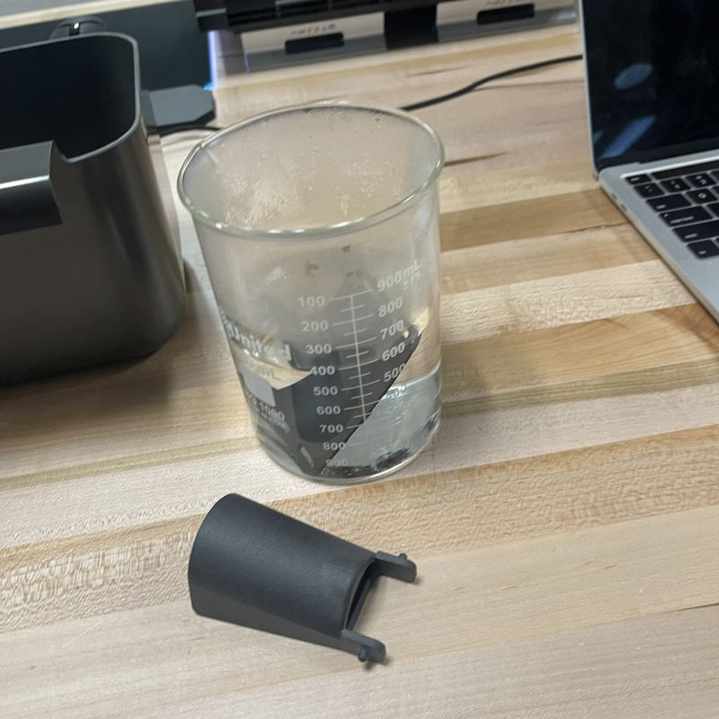
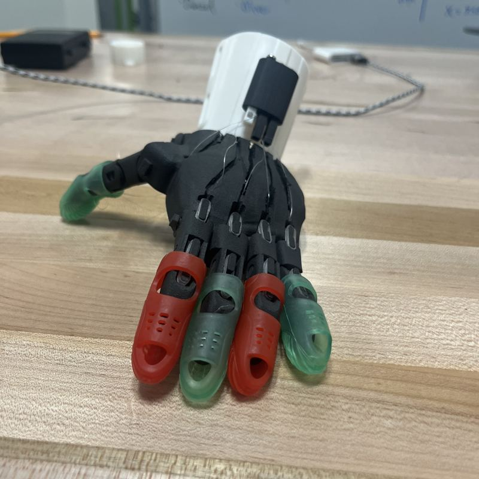

W&L students learning to build prosthetic hands.
We print, assemble and adjust e-NABLE’s free, open-source hand designs at W&L’s IQ Center. Students from any major are welcome.
Instagram @enablewlu“A global network of passionate volunteers using 3D printing to give the world a ‘Helping Hand.’”
The e-NABLE mission








FAQ
What is e-NABLE?
A global volunteer community that shares free designs for 3D-printed hands and arms. Learn more at Enabling the Future.
Do I need to know CAD or 3D printing?
No prior experience needed. Photographers, writers and organizers are welcome too.
Can I request a hand here?
Not yet. Start with the e-NABLE Hub, which connects people with volunteers.
Contact
Interested in building with us? Students from any major are welcome.
Find us on Instagram